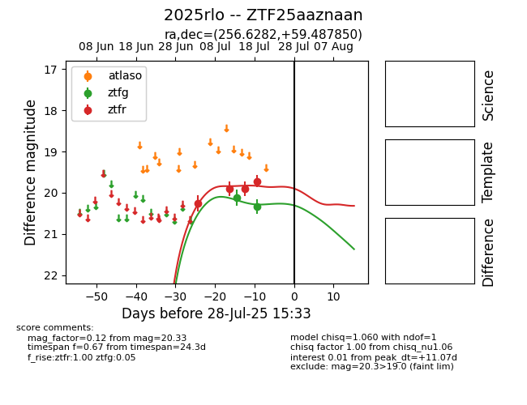

Target 2025rlo at 2025-07-28 15:33, see:
FINK: fink-portal.org/2025rlo
Lasair: lasair-ztf.lsst.ac.uk/objects/2025rlo
ALeRCE: alerce.online/object/2025rlo
TNS: wis-tns.org/object/2025rlo
YSE: ziggy.ucolick.org/yse/transient_detail/2025rlo
alt names
ZTF25aaznaan (ztf,fink)
2025rlo (tns,yse)
coordinates:
equatorial (ra, dec) = (256.6282,+59.48785)
galactic (l, b) = (88.5026,+36.33907)
photometry
last ztfg=20.33, ztfr=19.72
2 ztfg, 4 ztfr detections
